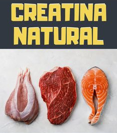

conheca o suplemento
Na sociedade contemporânea, onde as pessoas passam horas na frente de um computador e aderem facilmente a hábitos sedentários, alimentação irregular e inadequada, torna-se fundamental a conscientização sobre a importância da prática regular de atividades físicas. Praticar exercícios é uma recomendação unânime de diversos profissionais de saúde e uma necessidade incontestável para manter um estilo de vida saudável.

Nesse cenário, a suplementação de creatina tem ganhado popularidade, sendo um dos mais amplamente utilizado por suas propriedades ergogênicas, embora tenha sido descoberta há mais de cento e cinquenta anos, apenas recentemente intensificou-se o estudo de seu potencial como recurso suplementar. Nesse contexto, o uso de substâncias ou tratamentos desenvolvidos para aprimorar o desempenho físico, tem se divulgado nos últimos anos entre atletas, profissionais, como amadores ou praticantes. Várias drogas ou hormônios, como anfetaminas, anabolizantes e o Hormônio do Crescimento (GH), têm sido utilizados para melhorar o desempenho físico, mas são proibidos pelo COI (Comitê Olímpico Internacional) devido a serem considerados como doping em esportes. Por isso, os atletas vêm buscando cada vez mais alternativas eficazes e legais para auxiliar na melhora do desempenho físico.
O principal suplemento utilizado em todo o mundo é a creatina, por ser um ergogênico de utilização legal em todos os esportes, e que algumas pessoas deixam de utilizar devido à desinformação. A suplementação de creatina, quando realizada corretamente, tem demonstrado ser eficaz na melhoria da força muscular, na redução da fadiga e no aumento da resistência em praticantes de exercícios de alta intensidade e curta duração, proporcionando benefícios significativos para atletas e entusiastas do condicionamento físico. A creatina é um composto natural encontrado em alimentos de origem animal, como carnes, peixes, frango, ovos, frutos do mar, leite e seus derivados. Além disso, a creatina é produzida pelo organismo humano, principalmente pelo fígado, rins e pâncreas. A eficácia da creatina no desempenho em exercícios de alta intensidade e curta duração se deve à sua capacidade de ressintetizar o ATP (adenosina trifosfato), que é uma fonte de energia essencial durante o exercício. Portanto, a creatina desempenha um papel fundamental na melhoria do desempenho muscular, tornando-se uma escolha popular entre aqueles que buscam melhorar seus resultados em atividades físicas.
